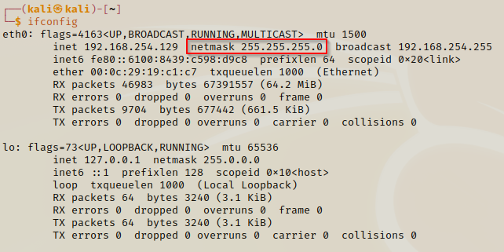

Subnetting
- Understanding the host allocation and the maths behind it
To find out our machine's subnet we execute the ifconfig command in the terminal.
ifconfig

You will find the subnet labelled under netmask.
Subnets are just like IP addresses, by converting data into bits. And just like in IP addresses, each 255 (numerical) value is equivilent to 8 bit.
Because these values are represented in a binary numbers (1's and 0's), the binary value of 1 means there is a valid number from 1 - 255;
while the binary value of 0 signifies an empty value (this is 0 in the subnet).
Depending on how the binaray values are switched on will determine a lot of things for us - which is why it is important!
Calculating Hosts & Networks
Let's look at how we can find an easy way to calculate the number of hosts for any given IP address.
We will look at one of the most common subnet addresses (255.255.255.0) and how things work in the background.
wack 24 / slash 24 network

This diagram shows how subnets work under the hood. This is a common subnet for households and small businesses becuase it holds up to 256 hosts.
As we covered before, these subnet addresses are made up of binary numbers, amounting to 8 bits each (4x 8 bits - 32 bits being the max).
Each 1x bit from the 8 bit is a binary value from 1 - 255; if a number between that exists then the switch is opened
and a binay value of 1 is returned. If the binary number below is 0, then that means the switch is closed.
As you can see we start the bit values from 128, then the value decreases by half each bit value that comes after.
Starting from point A (this is the starting point of the first 8 bits), the switch will start from there and work its way down to the last swtich.
If we add all the bit numbers together we will get 255 for each 8 bit.
The switches have to work in order, you will not have a switch that has skipped prior switches.
We calculate the number of hosts by how many bits are swicthed off.
This tells us how many hosts are available to us (calculate 2 to the power of switched off bits).
- 2 ** 8 means 8 hosts are available means 8 bits left switched off.
The amount of hosts you can have on your private network is determined by how you set your subnet mask.
If you check on the cheat csheet, as you turn off the bits the number of hosts increases.
- We always subtract 2 from the final amount of hosts because we need to accomondate for the Broadcast address and Network ID address.
Subnetting cheat sheet

Lets look at how we could create a shortcut to help us do the same (in case for exams/inetrviews etc).
We will set ou numbers from 1 to 32 in rows of 4x - this will be our bits. Then we will list the bit numbers for the host & subnet.
Cheat sheet shortcut

How did we work out the number of subnets? An easy way to do it is to add the subnet with the host in a diagonal motion.
Calculate amount of subnets

If we say after multiples of 8, we add an extra 255 to the subnet address. So if the network is wack 20, it would have 16 hosts and a subnet of 255.255.240.0

You should want to get comfortable with subnets because they will become very useful when working on larger-scale networks or when you want to separate your hosts for different functionalities.
Task

REMEMBER !!
- To use the cheat sheet shorctut method to quickly find out an IP's subnet
- Always minus 2 from total number of hosts when calculating the broadcast address
- Start both hosts and subnets at 128 when using this shortcut method
- To find the subnet we add the existing subnet to the next host; this will give you the value of the next subnet.
- The first address is your Network ID and your last address is the bradcast address. This can sometimes change so be aware
- Use sites like https://ipaddressguide.com/cidr to check if your IP address / subnet address / broadcast address / number of hosts is correct
- When people refer to the network number (eg network 24), you want to be able to calculate how many hosts & subnets it has quickly.